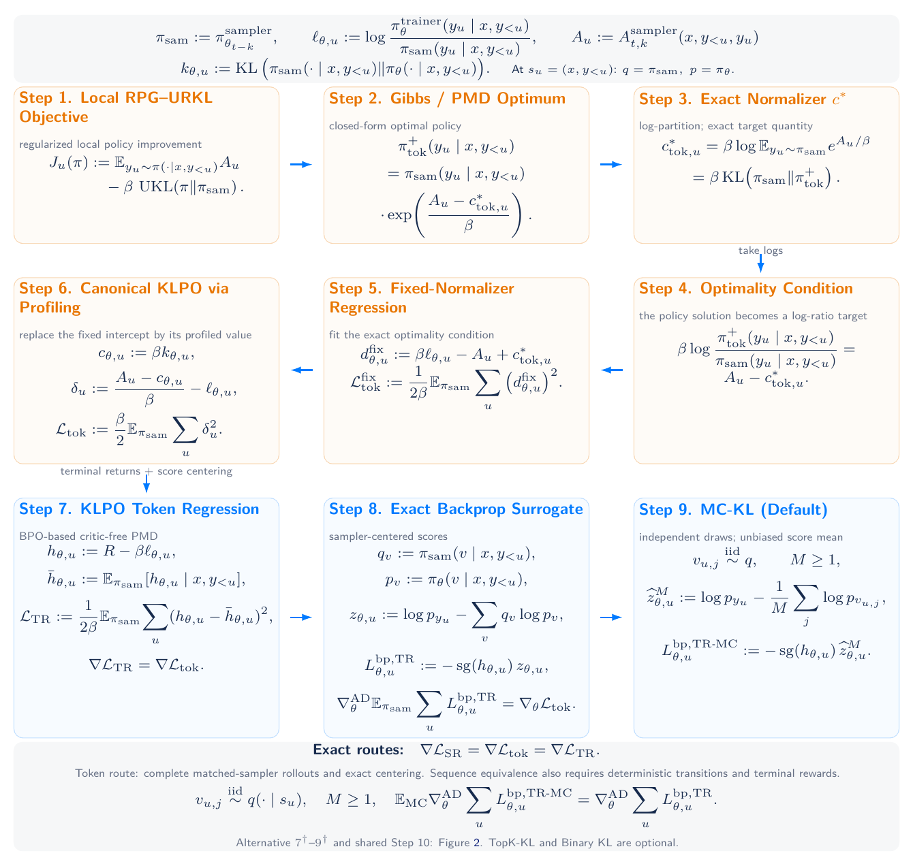

One complete rollout.
No same-prompt response group is required. Auxiliary MC samples are token draws at visited prefixes, not additional completions.
Critic-free · Single-rollout · Off-policy
Critic-Free Agentic Reinforcement Learning.
Default: KLPO token regression + Monte Carlo KL (MC-KL).
KL-Regularized Policy Optimization (KLPO) is a critic-free, single-rollout method for asynchronous off-policy agentic reinforcement learning. Its canonical objective fits a local policy mirror descent (PMD) condition by regressing trainer-to-sampler log-ratios, with no multiplicative importance weights. Our default token-regression implementation uses a per-token return coefficient and score centering to realize this gradient without a critic or reward group. Monte Carlo KL (MC-KL) estimates the conditional score mean with M ≥ 1 independent sampler draws per prefix, recovering the full-KL gradient in expectation without extra response rollouts. Under deterministic token transitions and terminal rewards, Bellman telescoping gives an alternative sequence-regression objective. Removing its prompt value changes the population loss only by a parameter-independent constant; independent MC-KL with M ≥ 2 and leave-one-out trajectory feedback preserves its expected gradient. Fresh auxiliary draws from the historical sampler preserve conditional unbiasedness after adaptive updates; fixed-record reuse is an empirical surrogate. Top-K Aggregated KL (TopK-KL) and Binary KL are optional approximations that need not preserve the exact equivalence. Both routes avoid estimating or learning prompt-and-version normalizers, so asynchronous replay needs no auxiliary normalization predictor or same-prompt response group.
No same-prompt response group is required. Auxiliary MC samples are token draws at visited prefixes, not additional completions.
Terminal rewards and trainer-to-sampler log-ratios supply per-token feedback. No critic or learned prompt normalizer is needed.
Independent auxiliary draws estimate the sampler-conditioned score mean. Token regression supports any M ≥ 1, with no extra response rollouts.
Retain the collection version and actual sampler probabilities. Recompute trainer scores and feedback at each update, with no multiplicative importance weights. The default is KLPO token regression + MC-KL.
Sum over generated policy tokens. Average over complete responses.

The regression route determines how tokens are weighted. The KL estimator determines how their scores are corrected. Explore all eight implemented combinations.
Each token uses h_u = R − βℓ_u, where ℓ_u = log p(a_u) − log q(a_u).
M independent token draws per prefix, with replacement. M ≥ 1; launcher default M = 128.
−∑_u h_u [∇ log p(a_u) − (1/M) ∑_j ∇ log p(v_u,j)]
Independent auxiliary draws recover the full-KL token gradient in expectation, including M = 1.
klpo_token_loss(..., kl_estimator="mc")TRY IT ON CPUpython examples/train_toy.pyHere q is the actual sampler and p is the trainer; all probabilities are conditional on the visited prefix. Sum over policy tokens, then average over complete responses. M counts random draws; K counts head tokens.
MC draws are independent of the complete rollout and across prefixes. Fresh draws from the historical sampler preserve conditional unbiasedness after adaptive updates. Reusing fixed records gives an empirical surrogate.
Token and sequence population gradients agree for Full KL and independent MC-KL under the report’s complete-rollout, deterministic-transition, and terminal-reward assumptions. Single-sample gradients can differ; TopK-KL and Binary KL are approximations.
A CPU example to inspect the update, with a native Molt interface for model training. The toy policy uses variable-length responses, a terminal verifier, historical sampler versions, and repeated learner updates. No model or dataset download is needed.
Requirements: Python 3.10+ and PyTorch 2.2+. Code is licensed under Apache 2.0.
# Clone and install
git clone https://github.com/yifanzhang-pro/KLPO.git
cd KLPO
python -m venv .venv
source .venv/bin/activate
pip install -e '.[test]'
# Token regression + MC-KL (default, M=128)
python examples/train_toy.py
# A single auxiliary draw is also valid
python examples/train_toy.py --mc-samples 1
# Verify the loss implementation
python -m pytest -q| Resource | Contents |
|---|---|
| Algorithm reference | All eight loss combinations, sampling contracts, and numerical stabilization. |
| Training guide | Pinned native Molt installation, R1/Qwen-Math launchers, and execution limits. |
| Native Molt backend | Sampler probability capture, replay transport, and differentiable trainer scoring. |
| CPU tests and CI | Gradient identities, numerical boundaries, and the native backend contract. |
KL-Regularized Policy Optimization for Critic-Free Agentic Reinforcement Learning
Yifan Zhang et al. · Technical report · 56 pages
September 18, 2026 · Updated September 20, 2026
The report includes the complete derivation, proofs, implementation assumptions, and an appendix comparison with the SKLPO response-Gibbs objective.
Download paper ↓LaTeX source ↗GitHub ↗
The published PDF is an unmodified snapshot of paper-source commit 1658d8d.
If you find this work useful, please cite:
@techreport{zhang2026klpo,
title = {{KL}-Regularized Policy Optimization for Critic-Free Agentic Reinforcement Learning},
author = {Zhang, Yifan and others},
year = {2026},
month = sep,
url = {https://yifanzhang-pro.github.io/KLPO/}
}{kind=link}